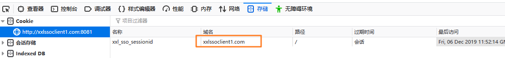
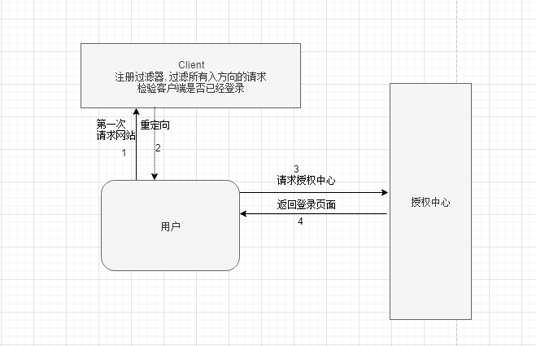
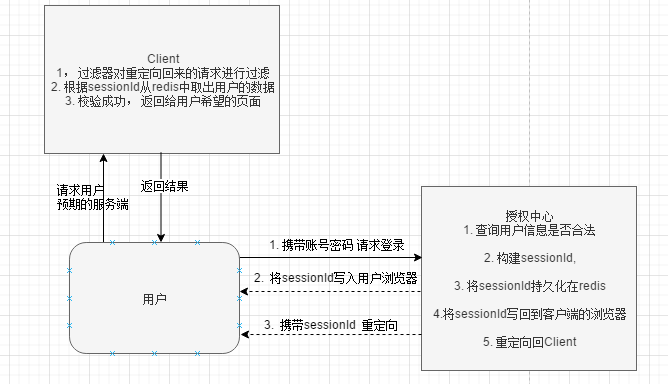
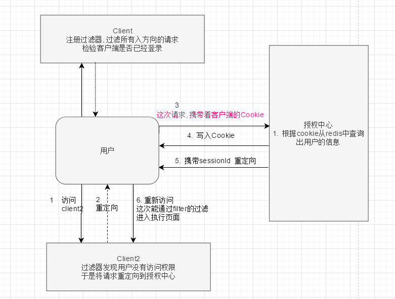

在大型的互联网公司中会有多个系统, 多个项目, 虽然这些项目都属于同一家公司, 但是项目本身其实都是独立的, 那多个系统可不可以实现共享同一份用户认证数据呢?
SSO单点登录就是做这件事, 各个项目之间彼此相互信任, 在其中任意一个系统中进行登录, 用户的认证信息会被缓存在用户本地, 当用户去访问其他站点时, 可以复用这份认证信息,而免去了重新登录的麻烦, 提高用户体验感
其实市面上的SSO框架还是挺多的, xxl是国人写的, 代码还是挺容易懂的, 对了解SSO的实现流程也是比较有帮助的
第二点 : 这个项目中会有大量的操作 HttpServletRequest 以及 HttpServletResponse 的代码, 我们从中肯定能学习到编码的技巧, 收获到大量跟 request , reponse, jedis 以及往浏览器写入cookie, 重定向等逻辑, 值得学习一下封装成工具类使用
xxl的官网是: https://www.xuxueli.com/xxl-sso/
整体的实现思路就是URL+对Cookie或者是token的读写实现的跨域, 这时一种怎么样的实现方式呢? 这就和浏览器对cookie的处理有关了, 当我们使用浏览访问某个站点时, 后台的逻辑可能会往浏览器中写入cookie, 这个cookie的作用大家都知道, 就是一种身份标识, 当用户再次访问相同的站点时, 浏览器会自动的携带着这个站点对应的域名下面的cookie
就像下面的图中一样, 标识, 这个cookie属于 xxlssoclient1.com 换句话说,就是用户访问其他站点时是不会携带这个cookie的

从上面的分析中我们可以看出, 其实单点登录的局限性很明显,不能跨域浏览器,因为授权中心的凭证就是存放在用户的浏览器中的cookie
言归正传
用户请求登录页

服务端一启动首先会先初始化过滤器, 使用这个过滤器将过滤用户的所有的请求, 校验用户是否有权限访问当前系统, 如果没有权限的话, 就将用户的请求转发到授权中心, 转发的路径如下:
http://xxlssoserver.com:8080/xxl-sso-server/login?redirect_url=http://xxlssoclient1.com:8081/xxl-sso-web-sample-springboot/添加redirect_url参数的意图很明显,就是为了从授权中心还会重定向回来
如果授权中心发现,当前访问的用户确实没有任何可用的信息, 就返回一个登录页面给用户
用户 登录
用户在登陆页面发送登陆的请求到授权中心，会经过如下的流程

经过的流程我在上图中都标记出来了， 值得注意的是 第二步，会将用户的授权签名提前写回到用户的浏览器中， 因为用户向访问的Client中存在拦截器， 专门拦截用户的请求中是否携带合法的签名，在这里将用户的请求写入到浏览器中后， 下次用户在次访问Client时，就有合法的身份了
第二个注意点就是 ，在授权中心发起了重定向的操作， 重定向的URL如下：
http://xxlssoclient1.com:8081/xxl-sso-web-sample-springboot/?xxl_sso_sessionid=1000_e92ca0cb494b40eaa8e87a3aceb50279url中会携带着sessionId, 目的是保证了这次请求,能顺利的经过Client中检验
用户访问彼此信任的其他应用是如何做到不用重复授权的, 如下图

假设Client的URL是:
http://xxlssoclient1.com:8081/xxl-sso-web-sample-springboot/Client2的URL是
http://xxlssoclient2.com:8081/xxl-sso-web-sample-springboot/如果Client和Client2共享一个授权中心 , 那么我们在浏览器上先使用Client进行一次登录. 登录成功后返回登录页面
然后我们在这个浏览器上继续访问Client2的URL, 大家可以看到,Client和Client2的URL中的区别: 就是域名不同, 当然我现在是在本地修改host名字进行模拟 , 实际生产上也是这个样子, 比如一个大型互联网公司, 它肯定有不同的项目 , 不同的项目就有自己不同的域名 , 然后我们现在就实现了访问不同的域名依然能够完成登录
结合上图看, 用户去访问Client2时, 因为用户从来没有登录过, 所以被Client2的拦截器拦截下来了, 然后将用户的请求重定向到授权中心, 但是这次重定向可是很特别的, 因为它会携带上第一次访问Client时,写入到用户浏览器的Cookie, , 这就好办了, 授权是认识这个Cookie的, 于是授权中心拿着这个cookie从redis中取出了用户的信息, 然后将为用户生成的授权sessionId写回用户的浏览器中, 这些写回的授权id, 被浏览器存放在 http://xxlssoclient2.com 域名下面, 然后再将这个请求重定向回Client2, 这次从定向回来的请求URL长成下面这样
http://xxlssoclient2.com:8081/xxl-sso-web-sample-springboot/?xxl_sso_sessionid=1000_6966ea25ae264a28aa3ffe3b89ca7c9a携带了sessionId, 整体一套流程走下来, 客户端也无需要进行重复登录... 实现了单点登录
注销就是删除redis缓存中用户的信息, (xxl的实现中, 授权中心和所有的Client之间共享一个Redis数据库) 这样看, 其实删除也就比较简单了, 只要我们保证能将redis中的缓存的用户的信息删除就ok, 用户浏览器中的 cookie删除与否其实意义不大, 因为redis中没有和这个cookie中完全配对的cookie的话, 这个请求仍然会被框架打向登录页面